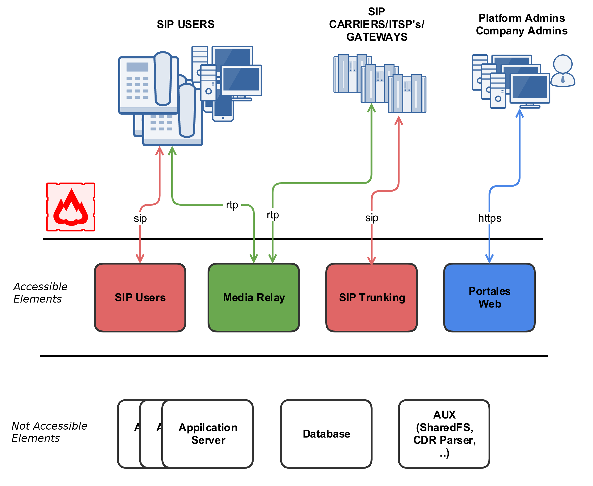
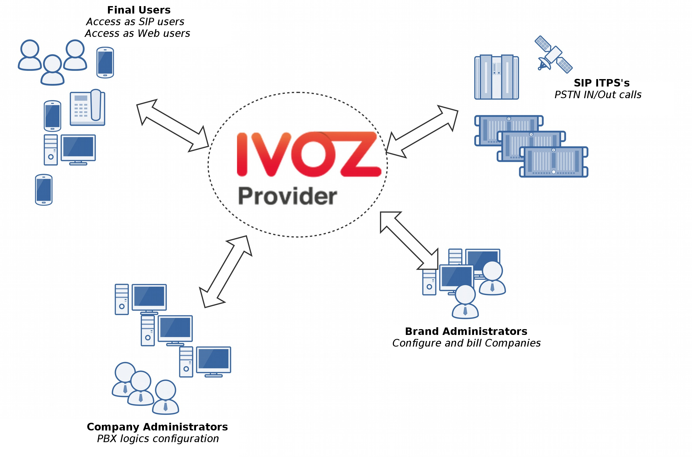

Platform general architecture¶
General diagram¶
Following diagram shows the global architecture of IvozProvider solution, with all its components:
This is a more conceptual diagram:
SIP signalling flow¶
The first diagram shows the SIP signalling traffic involved in the establishment, modification and termination of sessions following the SIP RFC 3261 and any related RFCs.
These are the external SIP entities involved:
- UACs: users hardphones, softphones, SIP-capable gadget.
- SIP carriers/DDI Providers: carriers used to interconnect IvozProvider with external SIP networks (and, probably, with PSTN).
All the SIP traffic (in any of the supported transports: TCP, UDP, TLS, WSS) they send/receive is to/from this two internal SIP entities of IvozProvider:
- In fact, users UACs only talk to Users SIP Proxy and ‘SIP carriers’ and ‘DDI
- Providers’ only talk to Trunks SIP Proxy.
Inside IvozProvider these two proxies may talk to Application Servers running Asterisk for some client types but no external element is allowed to talk to Application Servers directly.
RTP audio flow¶
Sessions initiated by SIP signalling protocol imply media streams shared by involved entities.
This media streams use RTP to send and receive the media itself, usually using UDP as a transport protocol.
External entities involved in RTP sessions can be divided in:
- Clients endpoints.
- Carriers/DDI Providers.
Both entities exchanges RTP with the same IvozProvider entity: media-relays.
IvozProvider implements media-relays using RTPengine.
Similar to SIP, these media-relays exchanges RTP when is needed with Application Servers, but external entities never talk directly to them.
HTTPS traffic¶
HTTPS is the third traffic type exchanged between IvozProvider and external world.
HTTPS traffic is used for:
Terminal provisioning: several hardphones ask for their configuration when they wake up and this configuration files can be served through HTTPS.
Web portals: IvozProvider has 4-level web portals for all the platform roles.
Both of these traffics are handled by Web portals IvozProvider entity.
Additional elements¶
IvozProvider has multiple elements that are not exposed to the external world but play a crucial task.
The most remarkable profile is database profile that gathers all the information of the platform and shares it between the majority of software packaged. IvozProvider uses MySQL database engine for this task.
Another remarkable task is asynchronous tasks handler in charge of encoding recordings, generating invoices, reloading services, importing data, etc.
Auxiliary elements¶
Aux profile runs software that, even though is not vital for calls placing, makes IvozProvider maintainer’s life much easier.
In fact, without them, debugging problems would be much harder and the quality of given service would be damaged.
Although IvozProvider does not include any of the tools mentioned here, we consider them crucial for dealing with production environments.
We list here tools configured in all production IvozProvider installations maintained by Irontec:
- Homer SIP capture: This amazing software lets us capture all the SIP traffic for later analysis, for obtaining statistics, call quality measuring, etc. Visit SIP Capture website for more information.
- Kibana log viewer: Showing logs collected by remaining ELK stack components.
- Chronograf metric viewer: Showing metrics collected by remaining TICK stack components.